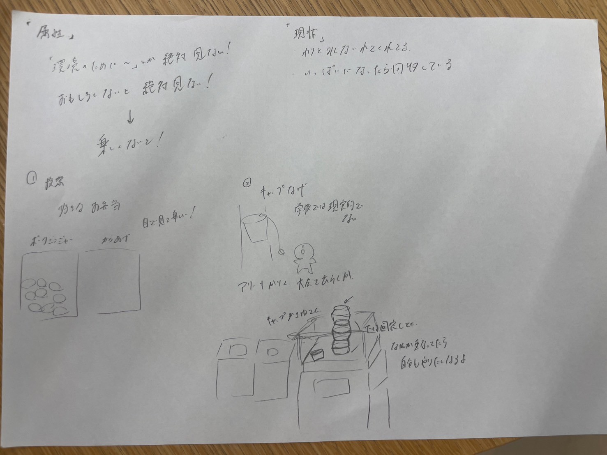
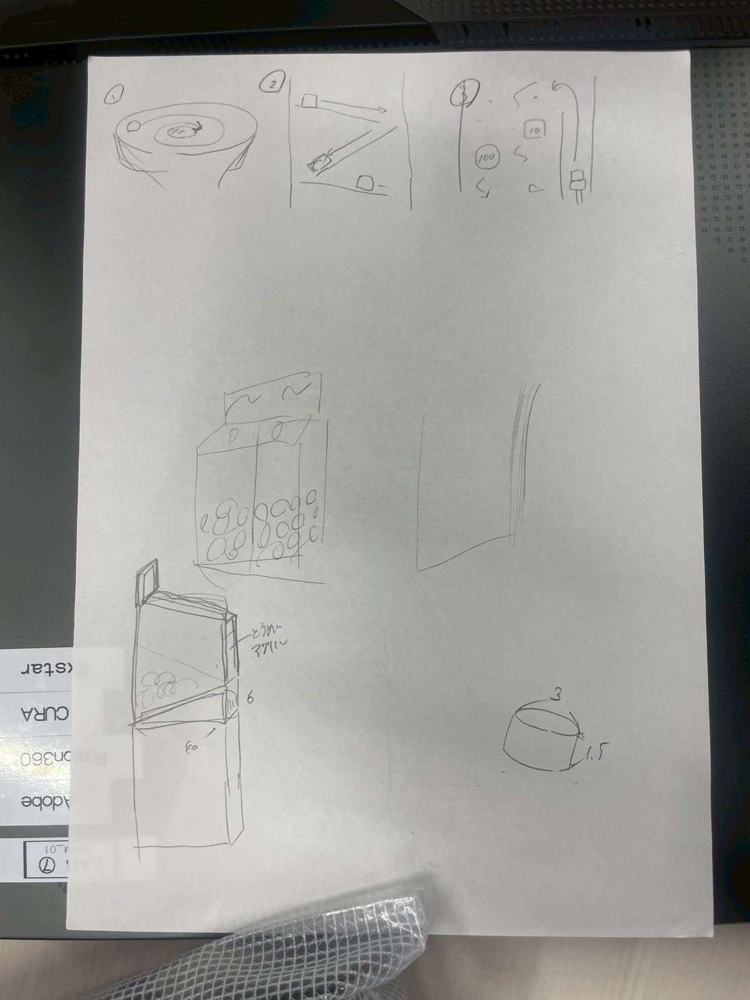

ナッジ
10/3 一日目 10/10 二日目
キャップをわざわざ外してキャップだけ入れてくれるようになるには？？
・横浜西口のたばこの投票

みなキャンだったらお題なにがいいかな
・キャップ投げ、的あてみたいにしたらおもしろい

→投げるのは学校じゃ無理かな
→じゃあ積み重ねてみる、倒したら負けみたいな
・キャップアート
・キャップを使ったガチャガチャ、抽選機
・コークオンみたいなアプリ

疑問
・なんで集める？目的は？何に使われてるの？
→環境とか面白くないからみんなきっと入れてくれないよなぁ

・キャップ神社を作ろう！！
まとめ
今の若者の傾向として自分たちがいいと思ったものを話し合ってみた
回収された先で何に使われているのかわからないと入れる気にもならない、ただ回収じゃ面白くない
かといって環境のためとか言われたって響かない
いかに面白く、回収できるかを考えた
横浜西口のたばこの投票箱
キャップ投げ
キャップアート
抽選機
ポイント還元
新提案１投票箱
このキャンパスならではの質問（お弁当といえば○○OR○○など）とともに各ゴミ箱の近くに設置
投票結果が見えやすいように表はアクリルで視覚でも楽しく
新提案２キャップアート
よくあるのは回収はして、運営がアートにするやりかた
今回は土台を置いておき、自分たちで穴にキャップをはめてもらうやり方
自分たちも参加している感を出せる
新提案３キャップ神社
お賽銭箱（ここではお賽栓箱）とする
留学生も多い中日本らしさを出せる案だと思う
ごみ箱の近くに設置、箱にお賽栓を入れてもらう
新提案４キャップ投げ大会
ペットボトルキャップ野球を5階アリーナで行う
ゼミの活動中外でキャップ投げをしていたところ国際交流につながった
開催日までに各チームそれぞれで好きなだけキャップを集めてもらう
なくなったら終了系のゲームにすれば、各チーム全力で集めるでしょ